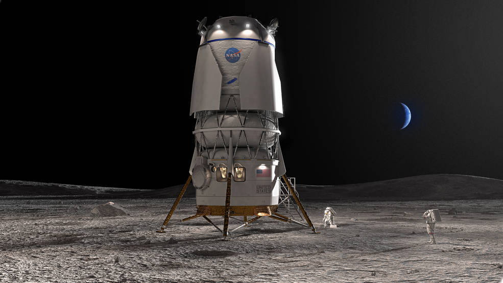
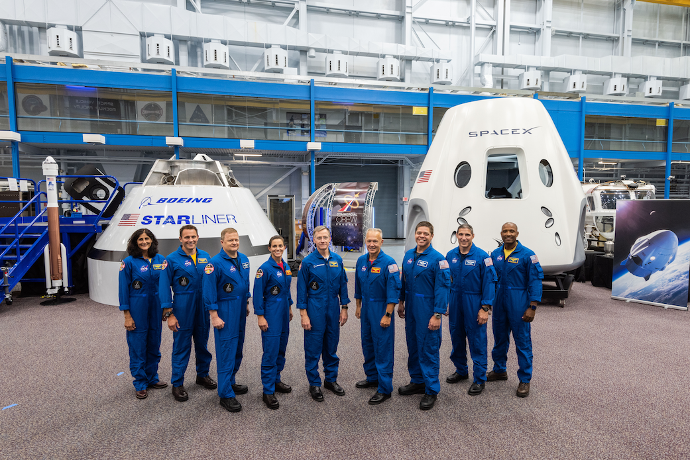

NASA (İngilizce: National Aeronautics and Space Administration, lit. Ulusal Havacılık ve Uzay Dairesi), Amerika Birleşik Devletleri'nin uzay programı çalışmalarından sorumlu olan kurum. 29 Temmuz 1958 tarihinde ABD Başkanı Dwight Eisenhower tarafından kurulmuştur. Daire, 1 Ekim 1958 tarihinden itibaren askerî amaçlardan ziyade sivil alanda barışçıl bir şekilde faaliyet göstermeye başlamıştır.[5] NASA, Ay'a dönük Apollo uçuşlarında, Skylab uzay istasyonu ve daha sonra uzay mekiği gibi çalışmalarla her zaman ABD'nin uzay çalışmalarına yön vermiştir. Günümüzde NASA, Uluslararası Uzay İstasyonu'nu desteklemekte ve yeni Ares I ve Ares V iniş araçlarını geliştirmektedir. Uzay programı çalışmalarının yanı sıra uzun vadeli sivil ve askerî roket çalışmaları da NASA'nın çalışma alanlarının arasındadır. Kuruluşu NASA ile ilgili kısa belgesel 1946'dan itibaren Ulusal Havacılık Danışma Komitesi (NACA), süpersonik Bell X-1 gibi roket uçakları ile deneyler yapmaya başladı.[6] 1950'lerin başlarında, Uluslararası Jeofizik Yılı (1957-1958) için bir yapay uydu fırlatma görevi vardı. Bunun için Amerikan Vanguard Projesi (Project Vanguard) geliştirildi. Sovyet uzay programının dünya tarihindeki ilk yapay uydu olan Sputnik 1'i 4 Ekim 1957'de fırlatmasından sonra, ABD'nin yeni başlayan kendi uzay çabalarına yönelik dikkati arttı. Ulusal güvenliğe ve teknolojik liderliğe yönelik olarak algılanan bu tehdit nedeniyle ("Sputnik krizi" olarak bilinir) endişelenen ABD Kongresi, hızlı ve etkili bir eylem çağrısı yaptı. Başkan Dwight D. Eisenhower daha bilinçli önlemler alınmasını tavsiye etti. Sonuç olarak temel araştırmaya bağlı bilim insanları, Sovyet askeri başarısına uyum sağlamak zorunda olan Pentagon, yeni meşgale arayan kurumsal Amerika ve uzay keşfine yönelik güçlü yeni bir kamuoyu eğilimi gibi temel ilgi grupları arasında, Beyaz Saray'ın oluşturduğu bir fikir birliği sağlandı.[7] 12 Ocak 1958'de NACA, Guyford Stever başkanlığında bir "Uzay Teknolojisi Özel Komitesi" örgütledi.[8] 14 Ocak 1958'de NACA Direktörü Hugh Dryden, "Uzay Teknolojisi için Ulusal Bir Araştırma Programı" yayınladı. Bu yeni federal kurum tüm askeri olmayan uzay faaliyetlerini yürütürken, İleri Araştırma Projeleri Ajansı (ARPA), Şubat 1958'de askeri amaçlar için uzay teknolojisi geliştirmek amacıyla oluşturuldu.[9] 29 Temmuz 1958'de ABD Başkanı Dwight D. Eisenhower, Ulusal Havacılık ve Uzay Kanunu'nu imzalayarak NASA'yı kurdu.[10] NASA, 1 Ekim 1958'de faaliyete geçtiğinde, Langley Havacılık Laboratuvarı, Ames Havacılık Laboratuvarı ve Lewis Uçuş İtki Laboratuvarı gibi üç büyük araştırma laboratuvarı, iki küçük test tesisi, yıllık 100 milyon dolarlık bir bütçe ve 8.000 çalışanı ile 43 yıllık NACA'yı tamamen bünyesine kattı.[11] Ayrıca, Ordu Balistik Füze Ajansı ve Amerika Birleşik Devletleri Deniz Araştırma Laboratuvarı'nın bazı unsurları da NASA'ya dahil edildi. Wernher von Braun liderliğindeki Alman roket programının teknolojisi, artık Ordu Balistik Füze Ajansı'nda (ABMA) çalışan von Braun ve ekibinin katkılarıyla NASA'nın Sovyetler Birliği ile girdiği uzay yarışının başarısında önemli bir rol oynadı. Amerikalı bilim adamı Robert Goddard'ın önceki çalışmalarının teknolojisi de NASA'nın başarısında önemli katkılar sağladı.[12] Amerika Birleşik Devletleri Hava Kuvvetleri'nin önceki araştırma çabaları[11] ve ARPA'nın ilk uzay programlarının çoğu da NASA'ya devredildi.[13] 1958 yılının Aralık ayında NASA, Kaliforniya Teknoloji Enstitüsü tarafından işletilen Jet İtki Laboratuvarı'nın kontrolünü de devraldı.[11]